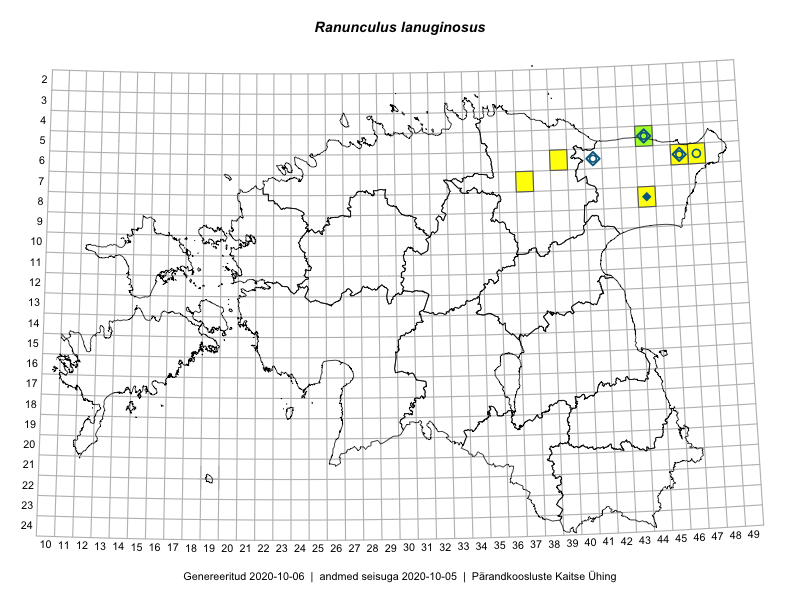

Ranunculus lanuginosus — villtulikas
Ranunculaceae :: Ranunculus lanuginosus L. (54)

Kaart põhineb 57 kirjel:
vaatlusi 26
herbaareksemplare 28
ELFi kirjeid1 3
Taime kaasaegsed ja ajaloolised leiukohad asuvad 7 ruudus.
Tingmärgid ja ruutude arvud periooditi (U2 / V3 )
█ 2006–2020 (6/–)
◆/◇ 1971–2005 (4/5)
○ 1921–1970 (4/0)
+ kuni 1920 (0/0)
× hävinud (–/0)
? kaheldav (–/0)
| Ruut | Leidja(d) | Leiuaeg | Kirje |
|---|---|---|---|
| 05-44 | botaaniline ekspeditsioon ZBI | 1982-07-17 | ruut/ala: Ranunculus lanuginosus L. |
| 05-44 | Martin Zobel | 1998 | ruut/ala: Ranunculus lanuginosus L. |
| 06-41 | Heljo Krall, Vilma Kuusk, Linda Viljasoo | 1982-07-21 | ruut/ala: Ranunculus lanuginosus L. |
| 06-46 | Linda Viljasoo | 1975-09 | ruut/ala: Ranunculus lanuginosus L. |
| 08-44 | Malle Leht, Urmas Laansoo, Tiiu Kull | 1987-08-18 | ruut/ala: Ranunculus lanuginosus L. |
| 08-44 | Toomas Kukk, Peedu Saar | 2014-07-09–2014-07-11 | ruut/ala: Ranunculus lanuginosus L. |
| 06-46 | Toomas Kukk, Eerik Leibak | 2015-04-25 | ruut/ala: Ranunculus lanuginosus L. |
| 06-46 | Toomas Kukk, Eerik Leibak | 2015-04-25 | ruut/ala: Ranunculus lanuginosus L. |
| 08-44 | Toomas Kukk, Peedu Saar | 2014-07-11 | ruut/ala: Ranunculus lanuginosus L. |
| 08-44 | Toomas Kukk, Peedu Saar | 2014-07-11 | ruut/ala: Ranunculus lanuginosus L. |
| 05-44 | Meeli Mesipuu | 2015-06-01 | ruut/ala: Ranunculus lanuginosus L. |
| 06-47 | Mari Metsoja, Jaak-Albert Metsoja | 2015-07-22 | ruut/ala: Ranunculus lanuginosus L. |
| 05-44 | Meeli Mesipuu | 2015-06-01 | ruut/ala: Ranunculus lanuginosus L. |
| 05-44 | Meeli Mesipuu | 2015-06-01 | ruut/ala: Ranunculus lanuginosus L. |
| 05-44 | Meeli Mesipuu | 2015-06-01 | ruut/ala: Ranunculus lanuginosus L. |
| 07-37 | Toomas Kukk, Peedu Saar | 2017-09-28 | ruut/ala: Ranunculus lanuginosus L. |
| 07-37 | Toomas Kukk, Peedu Saar | 2017-09-28 | ruut/ala: Ranunculus lanuginosus L. |
| 07-37 | Toomas Kukk, Peedu Saar | 2017-09-28 | ruut/ala: Ranunculus lanuginosus L. |
| 06-39 | Meeli Mesipuu | 2019-08-05 | ruut/ala: Ranunculus lanuginosus L. |
| 05-44 | Ott Luuk, Meeli Mesipuu | 2019-09-11 | ruut/ala: Ranunculus lanuginosus L. |
| 05-44 | Ott Luuk, Meeli Mesipuu | 2019-09-11 | ruut/ala: Ranunculus lanuginosus L. |
| 05-44 | Ott Luuk, Meeli Mesipuu | 2019-09-11 | ruut/ala: Ranunculus lanuginosus L. |
| 07-37 | Ott Luuk, Jaak-Albert Metsoja | 2019-08-05 | ruut/ala: Ranunculus lanuginosus L. |
| 05-44 | Meeli Mesipuu, Ott Luuk | 2019-09-11 | ruut/ala: Ranunculus lanuginosus L. |
| 06-47 | Thea Kull, Tiiu Kull | 2009-06-20 | ruut/ala: Ranunculus lanuginosus L. |
| 06-47 | Thea Kull | 2009-06-20 | ruut/ala: Ranunculus lanuginosus L. |
| 05-44 | G. Avajev | 1930-06-25 | TU250778: Ranunculus lanuginosus L. |
| 06-46 | L. Pihlapuu | 1969-06-23 | TU250779: Ranunculus lanuginosus L. |
| 06-41 | L. Pihlapuu | 1969-06-20 | TU250780: Ranunculus lanuginosus L. |
| 06-41 | L. Pihlapuu | 1969-06-20 | TU250781: Ranunculus lanuginosus L. |
| 06-46 | L. Pihlapuu | 1969-06-23 | TU250782: Ranunculus lanuginosus L. |
| 06-41 | L. Pihlapuu | 1963-06-14 | TU250783: Ranunculus lanuginosus L. |
| 06-46 | T. Lippmaa | 1932-07-13 | TU250784: Ranunculus lanuginosus L. |
| 05-44 | Ülle Jõgar | 2010-05-19 | TU255902: Ranunculus lanuginosus L. |
| 06-41 | Vilma Kuusk | 1963-06-14 | TAA0095775: Ranunculus lanuginosus L. |
| 06-41 | Vilma Kuusk | 1963-06-14 | TAA0095776: Ranunculus lanuginosus L. |
| 05-44 | Liivia Laasimer, Linda Viljasoo | 1982-07-08 | TAA0095777: Ranunculus lanuginosus L. |
| 06-46 | Agnes Ojaveer, Vilma Kuusk | 1961-08-16 | TAA0095778: Ranunculus lanuginosus L. |
| 06-46 | Agnes Ojaveer, Vilma Kuusk | 1961-08-16 | TAA0095779: Ranunculus lanuginosus L. |
| 06-47 | Visolde Puusepp | 1961-08-10 | TAA0095780: Ranunculus lanuginosus L. |
| 05-44 | Toomas Kukk | 2001-08-18 | TAA0095781: Ranunculus lanuginosus L. |
| 05-44 | Gustav Vilbaste | 1929-08-09 | TAA0095782: Ranunculus lanuginosus L. |
| 05-44 | Gustav Vilbaste | 1925-07-04 | TAA0095783: Ranunculus lanuginosus L. |
| 05-44 | Gustav Vilbaste | 1925-07-04 | TAA0095784: Ranunculus lanuginosus L. |
| 05-44 | Gustav Vilbaste | 1925-07-04 | TAA0095785: Ranunculus lanuginosus L. |
| 05-44 | M. Kask, Alma Saare, Liivia Laasimer | 1969-06-27 | TAA0095786: Ranunculus lanuginosus L. |
| 05-44 | M. Kask, Liivia Laasimer, Alma Saare | 1969-06-27 | TAA0095787: Ranunculus lanuginosus L. |
| 06-46 | Vilma Kuusk, Silvia Talts | 1969-06-23 | TAA0095788: Ranunculus lanuginosus L. |
| 06-46 | Vilma Kuusk, Silvia Talts | 1969-06-23 | TAA0095789: Ranunculus lanuginosus L. |
| 06-46 | Vilma Kuusk, Silvia Talts | 1969-06-23 | TAA0095790: Ranunculus lanuginosus L. |
| 06-41 | Vilma Kuusk, Silvia Talts | 1969-06-20 | TAA0095791: Ranunculus lanuginosus L. |
| 05-44 | P. Thomson | 1925-07-02 | TAM0000248: Ranunculus lanuginosus L. |
| 05-44 | P. Thomson | 1925-07-02 | TAM0000249: Ranunculus lanuginosus L. |
| 05-44 | Meeli Mesipuu | 2015-06-01 | TAA0140852: Ranunculus lanuginosus L. |
| 06-46 | Ülle Kukk | 1995 | ELF: 1775 |
| 05-44 | Katja Viberg, Johanna Viljanen, Margus Elts | 1994-07-07 | ELF: 7004 |
| 08-44 | Toomas Kukk, Peedu Saar | 2014-07-11 | ELF: 24282 |
Eestimaa Looduse Fondi (ELF) andmebaas sisaldab inventeeritud koosluste kirjeldusi ja liigiloendeid. Eriti rohkesti on andmeid märgalade kohta.↩︎
Ruutude arv uue atlase andmekogu järgi. Muuhulgas arvestab vanemat herbaariumi, 2005. aasta atlase välitöölehtedelt uuesti digitaliseeritud andmeid jne. Uue atlase andmekogust pärinevad andmed on kaardile kantud siniste sümbolitega.↩︎
Ruutude arv 2005. aasta atlase (Kukk, T., Kull, T., Eesti taimede levikuatlas. Eesti Maaülikool, Põllumajandus- ja Keskkonnainstituut, Tartu, 2005) järgi. Andmeallikana on kasutatud levik.exe programmi, kus igas ruudus on registreeritud vaid uusim leid. Seetõttu on vanemate perioodide kohta andmed puudulikud. Kasutatud levik.exe andmestikus leidub mõningaid kõrvalekaldeid atlase trükis ilmunud versioonist, sagedamini tarnade ja käpaliste seas. Lisaks leidub selles andmestikus valik liike (peamiselt väheste leidudega tulnuktaimed), mille kaarte trükis ei avaldatud. Vana atlase andmed ruutudest, milles ei ole uue atlase andmekogus leide enne 2006. aastat, on kaardil esitatud punaste sümbolitega. Vana atlase andmetel hävinud ja kaheldavaid leiukohti pole hilisemate (taas)leidude põhjal korrigeeritud.↩︎